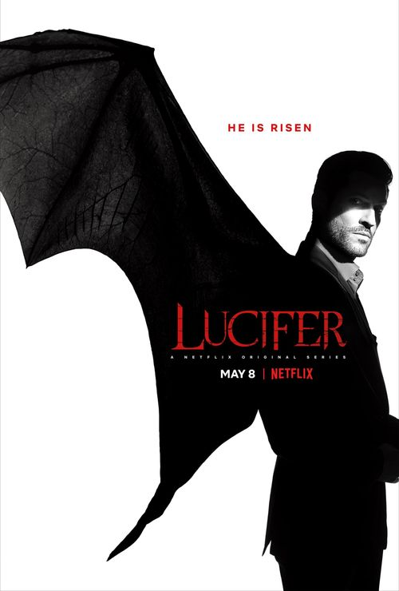

Lucifer 루시퍼
FOX에서 방영한 DC 코믹스 원작의 미국 드라마. 프레젠스[4]의 차남[5]인 루시퍼 모닝스타를 주인공으로 다룬다.
원작에서는 야훼를 오마주한 케릭터인 프레젠스의 아들로 나오지만, 드라마에서는 별도의 언급 없이 바로 실제 유다교 및 기독교에서 말하는 절대자의 아들로 등장한다. 이런 이유로, 성경에서 묘사하는 천국과 지옥을 그대로 다루기 때문에 DC 코믹스의 다른 CW버스 드라마들과 연계할 경우 세계관의 충돌이 있을 위험이 있다. 그래서 초인적이고 마법적인 존재들을 다루는 다른 드라마들과 연계를 적극적으로 하기가 어려운 면이 있으며, 설정상 DC 코믹스를 따르는 부분이 상당히 적다. 물론 '루시퍼'가 DC 코믹스 버티고 (현재는 DC 블랙으로 변함) 레이블로 표시되기는 하지만, 코믹스를 원작으로 삼아 만들어진 별도의 드라마로 인식하는 것이 좋다. 즉, DC 코믹스의 캐릭터들만 따와서 형사 드라마로 만든 개별 작품이다.
더 자세한 내용은 클릭